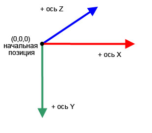
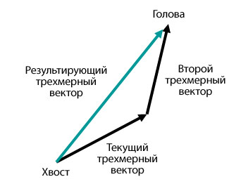
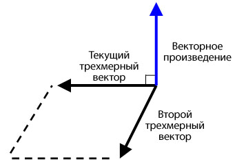

| Пакет | flash.geom |
| Класс | public class Vector3D |
| Наследование | Vector3D |
| Язык версии: | ActionScript 3.0 |
| Версии среды выполнения: | Flash Player 10, AIR 1.5 |
x представляет горизонтальную ось, а свойство y — вертикальную ось. В трехмерном пространстве свойство z представляет глубину. Значение свойства x увеличивается при перемещении объекта вправо. Значение свойства y увеличивается при перемещении объекта вниз. Значение свойства z увеличивается при перемещении объекта вдаль от точки обзора. При использовании перспективной проекции и масштабирования объекта размер объекта увеличивается при приближении к экрану и уменьшается при удалении от него. Как в правосторонней трехмерной системе координат, положительная ось z направлена в противоположную от наблюдателя сторону и значение свойства z увеличивается при удалении объекта от наблюдателя. Исходной точкой (0,0,0) в глобальном пространстве является верхний левый угол рабочей области.

Класс Vector3D может также представлять направление, стрелку от исходной точки координатной системы с координатами (0,0,0) до конечной точки; или компоненты плавающей запятой цветовой модели RGB (Red, Green, Blue — красный, зеленый, синий).
Кватернион добавляет четвертый элемент, свойство w, которое предоставляет дополнительную информацию об ориентации. Например, свойство w может задавать угол вращения объекта Vector3D. Комбинация угла вращения и координат x, y и z может задавать ориентацию экранного объекта. Ниже представлены элементы Vector3D в виде матрицы:

Связанные элементы API
 Скрыть унаследованные общедоступные свойства
Скрыть унаследованные общедоступные свойства Показать унаследованные общедоступные свойства
Показать унаследованные общедоступные свойства| Свойство | Определено | ||
|---|---|---|---|
 | constructor : Object
Ссылка на объект класса или функцию конструктора для данного экземпляра объекта. | Object | |
| length : Number [только для чтения]
Длина, значение текущего объекта VectorD от исходной точки (0,0,0) до координат x, y и z объекта. | Vector3D | ||
| lengthSquared : Number [только для чтения]
Квадрат длины текущего объекта Vector3D, вычисленный с использованием свойств x, y и z. | Vector3D | ||
| w : Number
Четвертый элемент объекта Vector3D (в дополнение к свойствам x, y и z) может содержать такие данные, как угол вращения. | Vector3D | ||
| x : Number
Первый элемент объекта Vector3D, например координата x точки в трехмерном пространстве. | Vector3D | ||
| y : Number
Второй элемент объекта Vector3D, например координата y точки в трехмерном пространстве. | Vector3D | ||
| z : Number
Третий элемент объекта Vector3D, например координата z точки в трехмерном пространстве. | Vector3D | ||
| Метод | Определено | ||
|---|---|---|---|
Создает экземпляр объекта Vector3D. | Vector3D | ||
Добавляет значения элементов x, y и z текущего объекта Vector3D к значениям элементов x, y и z другого объекта Vector3D. | Vector3D | ||
[статические]
Возвращает угол (в радианах) между двумя векторами. | Vector3D | ||
Возвращает новый объект Vector3D, который является точной копией текущего объекта Vector3D. | Vector3D | ||
Копирует все данные вектора из исходного объекта Vector3D в вызывающий объект Vector3D. | Vector3D | ||
Возвращает новый объект Vector3D, который расположен перпендикулярно (под прямым углом) к текущему и второму объекту Vector3D. | Vector3D | ||
Уменьшает значения элементов x, y и z текущего объекта Vector3D на значения элементов x, y и z заданного объекта Vector3D. | Vector3D | ||
[статические]
Возвращает расстояние между двумя объектами Vector3D. | Vector3D | ||
Если текущий объект Vector3D и объект, заданный в качестве параметра, являются единичными вершинами, данный метод возвращает косинус угла между двумя вершинами. | Vector3D | ||
Определяет равенство двух объектов Vector3D путем сравнения элементов x, y и z текущего объекта Vector3D и заданного объекта Vector3D. | Vector3D | ||
|
Показывает, определено ли заданное свойство для объекта. | Object | |
Увеличивает значение элементов x, y и z текущего объекта Vector3D на значения элементов x, y и z заданного объекта Vector3D. | Vector3D | ||
|
Показывает, есть ли экземпляр класса Object в цепи прототипов объекта, заданного в качестве параметра. | Object | |
Сравнивает элементы текущего объекта Vector3D с элементами заданного объекта Vector3D для определения приблизительного равенства. | Vector3D | ||
Задает обращение текущего объекта Vector3D. | Vector3D | ||
Преобразует объект Vector3D в единичный вектор делением первых трех элементов (x, y и z) на длину вектора. | Vector3D | ||
Делит значения свойств x, y и z текущего объекта Vector3D на значение его свойства w. | Vector3D | ||
|
Показывает наличие заданного свойства и его перечисляемость. | Object | |
Масштабирует текущий объект Vector3D на скаляр (значение). | Vector3D | ||
|
Задает доступность динамического свойства для операций цикла. | Object | |
Задает для членов объекта Vector3D определенные значения
| Vector3D | ||
Вычитает значения элементов x, y и z текущего объекта Vector3D из значений элементов x, y и z другого объекта Vector3D. | Vector3D | ||
|
Возвращает строковое представление этого объекта, отформатированного в соответствии со стандартами, принятыми для данной локали. | Object | |
Возвращает строковое представление текущего объекта Vector3D. | Vector3D | ||
|
Возвращает элементарное значение заданного объекта. | Object | |
| Константа | Определено | ||
|---|---|---|---|
| X_AXIS : Vector3D [статические]
Ось x, определенная в виде объекта Vector3D с координатами (1,0,0). | Vector3D | ||
| Y_AXIS : Vector3D [статические]
Ось y, определенная в виде объекта Vector3D с координатами (0,1,0). | Vector3D | ||
| Z_AXIS : Vector3D [статические]
Ось z, определенная в виде объекта Vector3D с координатами (0,0,1). | Vector3D | ||
length | свойство |
length:Number [только для чтения] | Язык версии: | ActionScript 3.0 |
| Версии среды выполнения: | Flash Player 10, AIR 1.5 |
Длина, значение, текущего объекта VectorD от исходной точки (0,0,0) до координат x, y и z объекта. Свойство w игнорируется. Длина или величина единичного вектора равна единице.
Реализация
public function get length():NumberСвязанные элементы API
lengthSquared | свойство |
lengthSquared:Number [только для чтения] | Язык версии: | ActionScript 3.0 |
| Версии среды выполнения: | Flash Player 10, AIR 1.5 |
Квадрат длины текущего объекта Vector3D, вычисленный с использованием свойств x, y и z. Свойство w игнорируется. По возможности используйте метод lengthSquared() вместо более медленного метода Math.sqrt() в методе Vector3D.length().
Реализация
public function get lengthSquared():NumberСвязанные элементы API
w | свойство |
public var w:Number| Язык версии: | ActionScript 3.0 |
| Версии среды выполнения: | Flash Player 10, AIR 1.5 |
Четвертый элемент объекта Vector3D (в дополнение к свойствам x, y и z) может содержать такие данные, как угол вращения. Значением по умолчанию является 0.
Запись кватерниона включает в себя угол в качестве четвертого элемента вычисления трехмерного вращения. Свойство w можно использовать для определения угла вращения объекта Vector3D. Комбинация угла вращения и координат (x,y,z) задает ориентацию экранного объекта.
Более того, свойство w можно использовать в качестве коэффициента деформации перспективы для спроецированного трехмерного положения или в качестве значения преобразования перспективы в представлении трехмерной координаты, спроецированной в двухмерное пространство. Например, можно создать матрицу проекции при помощи свойства Matrix3D.rawData, которая, после применения к объекту Vector3D, производит значение преобразования для четвертого элемента объекта Vector3D (свойства w). В результате последующего деления других элементов объекта Vector3D на значение преобразования получается спроецированный объект Vector3D. При помощи метода Vector3D.project() можно разделить первые три элемента объекта Vector3D на его четвертый элемент.
Связанные элементы API
x | свойство |
public var x:Number| Язык версии: | ActionScript 3.0 |
| Версии среды выполнения: | Flash Player 10, AIR 1.5 |
Первый элемент объекта Vector3D, например координата x точки в трехмерном пространстве. Значением по умолчанию является 0.
y | свойство |
public var y:Number| Язык версии: | ActionScript 3.0 |
| Версии среды выполнения: | Flash Player 10, AIR 1.5 |
Второй элемент объекта Vector3D, например координата y точки в трехмерном пространстве. Значением по умолчанию является 0.
z | свойство |
public var z:Number| Язык версии: | ActionScript 3.0 |
| Версии среды выполнения: | Flash Player 10, AIR 1.5 |
Третий элемент объекта Vector3D, например координата z точки в трехмерном пространстве. Значением по умолчанию является 0.
Vector3D | () | Конструктор |
public function Vector3D(x:Number = 0., y:Number = 0., z:Number = 0., w:Number = 0.)| Язык версии: | ActionScript 3.0 |
| Версии среды выполнения: | Flash Player 10, AIR 1.5 |
Создает экземпляр объекта Vector3D. Если в конструкторе параметр не указан, объект Vector3D создается с элементами (0,0,0,0).
Параметрыx:Number (default = 0.) | |
y:Number (default = 0.) | |
z:Number (default = 0.) | |
w:Number (default = 0.) |
add | () | метод |
public function add(a:Vector3D):Vector3D| Язык версии: | ActionScript 3.0 |
| Версии среды выполнения: | Flash Player 10, AIR 1.5 |
Добавляет значения элементов x, y и z текущего объекта Vector3D к значениям элементов x, y и z другого объекта Vector3D. Метод add() не изменяет текущий объект Vector3D. Вместо этого он возвращает новый объект Vector3D с новыми значениями.
В результате сложения двух векторов получается результирующий вектор. Одним из способов визуализации результата является рисование вектора из начальной или конечной точки первого вектора до конечной или начальной точки второго вектора. Полученным в результате вектором будет являться расстояние между начальной точкой первого вектора и конечной точкой второго вектора.

Параметры
a:Vector3D — Объект Vector3D, добавляемый к текущему объекту Vector3D.
|
Vector3D — Объект Vector3D, получающийся в результате добавления текущего объекта Vector3D к другому объекту Vector3D.
|
Связанные элементы API
angleBetween | () | метод |
public static function angleBetween(a:Vector3D, b:Vector3D):Number| Язык версии: | ActionScript 3.0 |
| Версии среды выполнения: | Flash Player 10, AIR 1.5 |
Возвращает угол (в радианах) между двумя векторами. Возвращаемый угол представляет собой наименьший радиан вращения первого объекта Vector3D до его выравнивания со вторым объектом Vector3D.
Метод angleBetween() является статическим. Его можно использовать как метод класса Vector3D напрямую.
Для перевода градусов в радианы можно использовать следующую формулу:
radian = Math.PI/180 * degree
Параметры
a:Vector3D — Первый объект Vector3D.
| |
b:Vector3D — Второй объект Vector3D.
|
Number — Угол между двумя объектами Vector3D.
|
clone | () | метод |
copyFrom | () | метод |
public function copyFrom(sourceVector3D:Vector3D):void| Язык версии: | ActionScript 3.0 |
| Версии среды выполнения: | Flash Player 11, AIR 3.0, Flash Lite 4 |
Копирует все данные вектора из исходного объекта Vector3D в вызывающий объект Vector3D.
Параметры
sourceVector3D:Vector3D — Объект Vector3D, из которого следует скопировать данные.
|
crossProduct | () | метод |
public function crossProduct(a:Vector3D):Vector3D| Язык версии: | ActionScript 3.0 |
| Версии среды выполнения: | Flash Player 10, AIR 1.5 |
Возвращает новый объект Vector3D, который расположен перпендикулярно (под прямым углом) к текущему и второму объекту Vector3D. Если возвращен объект Vector3D с координатами (0,0,0), два объекта Vector3D расположены параллельно друг к другу.

Можно использовать нормализованное векторное произведение двух вершин поверхности многоугольника и нормализованного вектора камеры или точки обзора наблюдателя для получения скалярного произведения. Значение скалярного произведения определяет, будет ли поверхность трехмерного объекта невидимой.
Параметры
a:Vector3D — Второй объект Vector3D.
|
Vector3D — Новый объект Vector3D, расположенный перпендикулярно к данному объекту Vector3D и объекту Vector3D, заданному в качестве параметра.
|
Связанные элементы API
decrementBy | () | метод |
public function decrementBy(a:Vector3D):void| Язык версии: | ActionScript 3.0 |
| Версии среды выполнения: | Flash Player 10, AIR 1.5 |
Уменьшает значения элементов x, y и z текущего объекта Vector3D на значения элементов x, y и z заданного объекта Vector3D. В отличие от метода Vector3D.subtract() метод decrementBy() изменяет текущий объект Vector3D и не возвращает новый объект Vector3D.
Параметры
a:Vector3D — Объект Vector3D, содержащий значения, которые нужно вычесть из текущего объекта Vector3D.
|
Связанные элементы API
distance | () | метод |
public static function distance(pt1:Vector3D, pt2:Vector3D):Number| Язык версии: | ActionScript 3.0 |
| Версии среды выполнения: | Flash Player 10, AIR 1.5 |
Возвращает расстояние между двумя объектами Vector3D. Метод distance() является статическим. Его можно использовать как метод класса Vector3D напрямую для получения евклидового расстояния между двумя трехмерными точками.
Параметры
pt1:Vector3D — Объект Vector3D в виде первой трехмерной точки.
| |
pt2:Vector3D — Объект Vector3D в виде второй трехмерной точки.
|
Number — Расстояние между двумя объектами Vector3D.
|
dotProduct | () | метод |
public function dotProduct(a:Vector3D):Number| Язык версии: | ActionScript 3.0 |
| Версии среды выполнения: | Flash Player 10, AIR 1.5 |
Если текущий объект Vector3D и объект, заданный в качестве параметра, являются единичными вершинами, данный метод возвращает косинус угла между двумя вершинами. Единичные вершины — это вершины с одинаковым направлением, но с одной длиной. Они удаляют длину вектора как множителя в результате. Метод normalize() можно использовать для преобразования вектора в единичный вектор.
Метод dotProduct() используется для вычисления угла между двумя вершинами. Он также используется в вычислении отбора или освещения невидимой поверхности. Отбор невидимой поверхности — это процедура определения поверхностей, которые будут скрыты в точке наблюдения. Нормализованные вершины с камеры или точки наблюдения и векторное произведение вершин поверхности многоугольника можно использовать для получения скалярного произведения. Если скалярное произведение меньше нуля, то поверхность видима камере или наблюдателю. Если две единичные вершины расположены перпендикулярно друг к другу, они являются ортогональными и их скалярное произведение равно нулю. Если две вершины расположены параллельно друг к другу, скалярное произведение равно единице.
Параметры
a:Vector3D — Второй объект Vector3D.
|
Number — Скалярная величина, которая была получена в результате скалярного произведения текущего объекта Vector3D и заданного объекта Vector3D.
|
Связанные элементы API
equals | () | метод |
public function equals(toCompare:Vector3D, allFour:Boolean = false):Boolean| Язык версии: | ActionScript 3.0 |
| Версии среды выполнения: | Flash Player 10, AIR 1.5 |
Определяет равенство двух объектов Vector3D путем сравнения элементов x, y и z текущего объекта Vector3D и заданного объекта Vector3D. Если значения этих элементов одинаковые, два объекта Vector3D равны. Если для второго дополнительного параметра задано значение true, сравниваются все четыре элемента объектов Vector3D, включая свойство w.
Параметры
toCompare:Vector3D — Объект Vector3D, сравниваемый с текущим объектом Vector3D.
| |
allFour:Boolean (default = false)w объектов Vector3D при сравнении.
|
Boolean — Возвращается значение true, если заданный объект Vector3D равен текущему объекту Vector3D, и значение false, если не равен.
|
Связанные элементы API
incrementBy | () | метод |
public function incrementBy(a:Vector3D):void| Язык версии: | ActionScript 3.0 |
| Версии среды выполнения: | Flash Player 10, AIR 1.5 |
Увеличивает значение элементов x, y и z текущего объекта Vector3D на значения элементов x, y и z заданного объекта Vector3D. В отличие от метода Vector3D.add(), метод incrementBy() изменяет текущий объект Vector3D и не возвращает новый объект Vector3D.
Параметры
a:Vector3D — Объект Vector3D, добавляемый к текущему объекту Vector3D.
|
Связанные элементы API
nearEquals | () | метод |
public function nearEquals(toCompare:Vector3D, tolerance:Number, allFour:Boolean = false):Boolean| Язык версии: | ActionScript 3.0 |
| Версии среды выполнения: | Flash Player 10, AIR 1.5 |
Сравнивает элементы текущего объекта Vector3D с элементами заданного объекта Vector3D для определения приблизительного равенства. Два объекта Vector3D приблизительно равны, если значение всех элементов двух вершин равны, или если результат сравнения находится в пределах допустимого отклонения. Разность между двумя элементами должна быть меньше значения, указанного в параметре tolerance. Если для третьего дополнительного параметра задано значение true, сравниваются все четыре элемента объектов Vector3D, включая свойство w. В противном случае при сравнении учитываются только элементы x, y и z.
Параметры
toCompare:Vector3D — Объект Vector3D, сравниваемый с текущим объектом Vector3D.
| |
tolerance:Number — Число, определяющее коэффициент допустимого отклонения. Если разность между значением элемента Vector3D, заданного в параметре toCompare, и значением текущего элемента Vector3D не превышает значение допустимого отклонения, эти два значения считаются приблизительно равными.
| |
allFour:Boolean (default = false)w объектов Vector3D при сравнении.
|
Boolean — Возвращается значение true, если заданный объект Vector3D приблизительно равен текущему объекту Vector3D, и значение false, если не равен.
|
Связанные элементы API
negate | () | метод |
public function negate():void| Язык версии: | ActionScript 3.0 |
| Версии среды выполнения: | Flash Player 10, AIR 1.5 |
Задает обращение текущего объекта Vector3D. Инверсный объект считается противоположным исходному объекту. Значения свойств x, y и z текущего объекта Vector3D меняются на значения -x, -y и -z.
normalize | () | метод |
public function normalize():Number| Язык версии: | ActionScript 3.0 |
| Версии среды выполнения: | Flash Player 10, AIR 1.5 |
Преобразует объект Vector3D в единичный вектор делением первых трех элементов (x, y и z) на длину вектора. Единичные вершины — это вершины, имеющие направление, но их длина равна единице. Они упрощают вычисления векторов, убирая длину в качестве множителя.
ВозвращаетNumber — Длина текущего объекта Vector3D.
|
project | () | метод |
public function project():void| Язык версии: | ActionScript 3.0 |
| Версии среды выполнения: | Flash Player 10, AIR 1.5 |
Делит значения свойств x, y и z текущего объекта Vector3D на значение его свойства w.
Если текущий объект Vector3D является результатом умножения объекта Vector3D на объект проекции Matrix3D, в свойстве w может содержаться значение преобразования. Затем проецирование может быть выполнено с помощью метода project() путем деления элементов на значение свойства w. Свойство Matrix3D.rawData можно использовать для создания объекта проекции Matrix3D.
scaleBy | () | метод |
public function scaleBy(s:Number):void| Язык версии: | ActionScript 3.0 |
| Версии среды выполнения: | Flash Player 10, AIR 1.5 |
Масштабирует текущий объект Vector3D на скаляр (значение). Элементы x, y и z объекта Vector3D умножаются на скалярную величину, заданную в параметре. Например, если вектор масштабируется с коэффициентом, равным десяти, в результате получается вектор, длина которого в десять раз больше. Скалярная величина может также изменить направление вектора. При умножении вектора на отрицательное число направление вектора меняется на обратное.
Параметры
s:Number — Множитель (скалярная величина), который используется для масштабирования объекта Vector3D.
|
setTo | () | метод |
subtract | () | метод |
public function subtract(a:Vector3D):Vector3D| Язык версии: | ActionScript 3.0 |
| Версии среды выполнения: | Flash Player 10, AIR 1.5 |
Вычитает значения элементов x, y и z текущего объекта Vector3D из значений элементов x, y и z другого объекта Vector3D. Метод subtract() не изменяет текущий объект Vector3D. Вместо этого данный метод возвращает новый объект Vector3D с новыми значениями.
Параметры
a:Vector3D — Объект Vector3D, вычитаемый из текущего объекта Vector3D.
|
Vector3D — Новый объект Vector3D, представляющий собой разницу текущего объекта Vector3D и заданного объекта Vector3D.
|
Связанные элементы API
toString | () | метод |
X_AXIS | Константа |
public static const X_AXIS:Vector3D| Язык версии: | ActionScript 3.0 |
| Версии среды выполнения: | Flash Player 10, AIR 1.5 |
Ось x, определенная в виде объекта Vector3D с координатами (1,0,0).
Y_AXIS | Константа |
public static const Y_AXIS:Vector3D| Язык версии: | ActionScript 3.0 |
| Версии среды выполнения: | Flash Player 10, AIR 1.5 |
Ось y, определенная в виде объекта Vector3D с координатами (0,1,0).
Z_AXIS | Константа |
public static const Z_AXIS:Vector3D| Язык версии: | ActionScript 3.0 |
| Версии среды выполнения: | Flash Player 10, AIR 1.5 |
Ось z, определенная в виде объекта Vector3D с координатами (0,0,1).
Tue Jun 12 2018, 11:34 AM Z